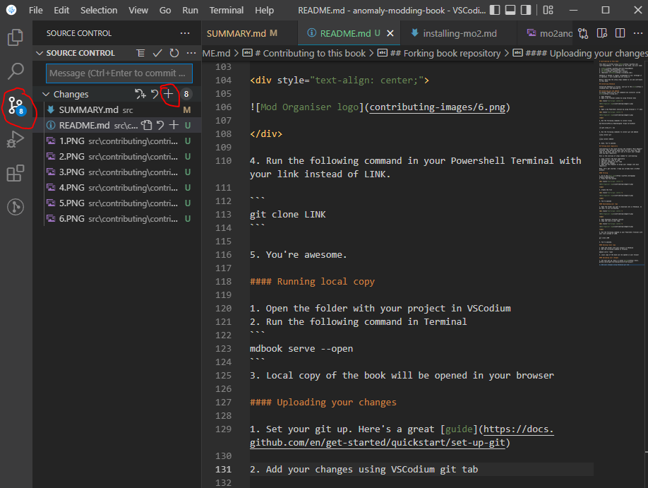
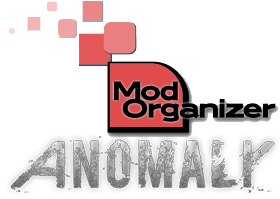
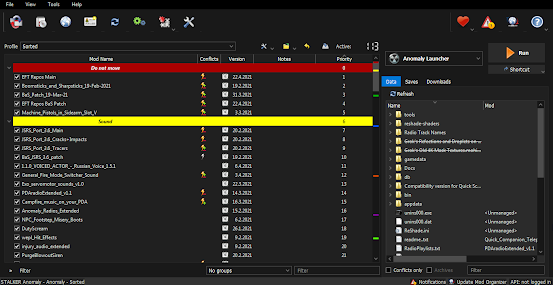
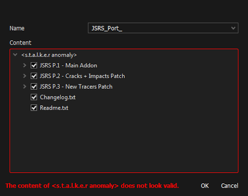

Introduction
Oh hey there! Nice to see you :)
This place will introduce you to the concepts of modding Anomaly, from installing your first mod to creating your own game-changing addons.
Choose a chapter from our table of contents and start reading. I recommend starting with Mod Organiser guide. If you want to contribute - feel free to send your articles (markdown-formatted) per Discord or learn the hard way to contribute.
Good luck, have fun, don't die
Igigog#6387
Meta
Links
Contributing to this book
This book is written using mdBook. To contribute to this book, you will need:
VSCodium or VSCode is highly recommended to use. Although it is optional, I will assume you are using it.
Below I describe the setup steps needed to run and contribute to this book.
Installing VSCodium
Installing VSCodium is trivial, just go to the link and download it.
Installing git and mdbook
To install these we will use command-line installer called Scoop.
- Open VSCodium
- Open a new terminal window by using Terminal menu

- Open a new Powershell session by using Terminal's "+" menu
- Run the following commands to install Scoop
Set-ExecutionPolicy RemoteSigned -Scope CurrentUser
irm get.scoop.sh | iex
- Run the following commands to install git and mdbook
scoop install git
scoop install mdbook
- Done. You're awesome.
Forking book repository
Contributing to this book follows the standart "Pull Request" workflow. That basically means that you will have your own copy of the book, and you will ask us to pull your changes into the main repository.
Here is the overview of steps needed for contributing:
- Copy ("fork") the main repository
- Download your copy of repo
- Add your changes to your copy
- Upload your changes
- Open the Pull Request to merge your changes into main repository
Welp, let's get started. I hope you already have a GitHub account.
Forking
- Go to the main repo
- Press the fork button

- Create the fork

- You're awesome
Downloading your repo
- Open the folder you want to download into in VSCodium. In my case, it will be Desktop.

- Open Poweshell Terminal session
- Copy the link to your repo.

- Run the following command in your Powershell Terminal with your link instead of LINK.
git clone LINK
- You're awesome.
Running local copy
- Open the folder with your project in VSCodium
- Run the following command in Terminal
mdbook serve --open
- Local copy of the book will be opened in your browser
Uploading your changes
-
Set your git up. Here's a great guide
-
Add your changes using VSCodium git tab. Open git tab, hover over "Changes" line and press "+".

- Add a nice message and press "✔" to commit your changes

- You should now be able to publish your changes

Creating Pull Request
- In main book repository, open "Pull Requests" tab and press "New pull request"

-
Press "compare across forks". Choose your repository and press "Create pull request".
-
You're awesome. Probably. Now ping Igigog#6387 in Discord to get your pull request reviewed.
-
Done. Your changes are added to the main book.
Getting Started
Installing MO2
This guide is meant to show you how to setup Mod Organizer 2 and how to mod Anomaly in a simple and easy way step by step.
Made by Starcry

What makes Mod Organizer 2 the superior mod manager?
-
Installed addons never touch your original game files, instead they are injected into the game only when you boot it up by utilizing virtual file system.
-
Mod list is easily manageable, unlike with JSGME you can update or make changes to any addons at any time, without the need of enabling/disabling.
-
Shows you which mods are conflicting in details.
Important note: Many antivirus softwares will block MO2 and Anomaly files causing you to have strange crashes, the reliable solution is to scan your MO2 folder for safety, then set an antivirus exclusion to the entire MO2 folder (and to your Anomaly folder).
Installation and instance setup
- Download the latest version of MO2 (Scroll down, download the .exe and install it)

- After getting this error and clicking "OK" select "Create a portable instance" and press next.


- Click "Browse..." and select your S.T.A.L.K.E.R Anomaly folder, name the instance whatever you want and click next.

- The next page will show you where you'r mods and other files for Anomaly mods will be stored, you can leave it as it is and click next.

- Click next again as linking an account to Nexus is not needed.

- After that you should see something like this.

- Congratulations, you paired MO2 with Anomaly successfully. After you click finish MO2 will start up.
Small tutorial
After MO2 boots up you will get 2 popups, one is for an optional tutorial and the other one is for Nexus which we won't need.

In case you skipped the tutorial or didn't fully understand it here's a quick explanation of the most important features:
-
Red highlight shows what you need to click to install addons. -
Yellow highlight shows profiles, you can create how many you want and have different mods enabled on each of them. -
Green highlight shows your virtual game directory, this can be useful for checking which file is being used from which addon. -
Blue highlight is used for starting the game, if you don't start your game with this button your mods won't be activated.

Guide to modding and solving conflicts
On the image below you can see how my MO2 looks, I have a little over 100 addons and a lot of conflicts.

After installing few addons you might notice these icons:
 This little lightning icon with a red minus next to it shows that the addon is being overwritten.
This little lightning icon with a red minus next to it shows that the addon is being overwritten. A lightning icon with green plus means the addon is overwriting another addon.
A lightning icon with green plus means the addon is overwriting another addon. If you see both of these icons it means the addon is overwriting an addon and is being overwritten by one.
If you see both of these icons it means the addon is overwriting an addon and is being overwritten by one. And last is the grey icon, this icon is next to an addon which is being fully overwritten making it redundant.
And last is the grey icon, this icon is next to an addon which is being fully overwritten making it redundant.
To make things work together you need to maintain a load order, that means that you can't just install addons and expect them to all work together, you can start by keeping your load order clean, make some separators (right-click into empty area) like I have in my load order here, after that you can install patches if needed. You can always ask about load orders in the addon-discussion channel.
A good start would be Grok's Community Curated Add-ons List for Anomaly 1.5.1.
Is it better to use a modpack or do everything yourself?
If you are new to modding you might think simply downloading a modpack is the best option, but that might not be the case as most of the time modpacks are the vision of the person who created it - meaning it might have features you won't like and it can be difficult to remove them, you also can't know if it works fine as it's all packed into one folder.
Using a modpack will also mean you won't be able to get help from the community with your crashes as only the modpack creator knows what changes were made and you'll have to rely on them to help you.
Most of the time modpacks aren't being updated frequently and it's near impossible to install any other addon with them.
Solving conflicts
Most of the time it's pretty easy because most popular addons already have existing patches, for example if you wanted to install Boomsticks and Sharpsticks with JSRS you would put BaS first, then JSRS files and then the patch for JSRS that comes with BaS.
Making patches yourself (Not recommended for beginners)
What if there is no patch available and the addons won't work together? You either have to choose which one you want or you can make a patch yourself, the best guide for that is Anomaly modding resource made by community member Jack-it.
Installing addons the right way
Remember that every addon you install needs to have only one gamedata folder, if you find an addon with many optional files you need to install it again every time and select only one gamedata.
As you can see in the picture below I get a popup when trying to install JSRS because it has multiple files, select one and install it, then do it again with the second file (Applies for every addon).

In case you get this popup instead of the one above, you need to expand the filetree and have only option selected, after that you rightclick it and press "set as stalker directory"



In case MO2 crashes when clicking on "manual" addon installation add this text to file ModOrganizer.ini found in Modding/Mo2/:
[CompletedWindowTutorials]
InstallDialog=true
Reporting crashes
Please ignore this if you are using a modpack and report any crashes to the modpack "creator".
If your game crashes and you don't know what caused it go to addon-discussion in Anomaly discord and post your load order along with a log from appdata/logs, it will be a text file named "xray_username".
Converting from JSGME to Mod Organizer 2
To do this you simply have to delete your "gamedata" folder (This will not delete your saves and MO2 will recreate the folder for you) and install the addons you had with MO2, if you don't want to reinstall them you can simply copy the contents of MODS folder to User/AppData/Local/ModOrganizer/Name of your instance/mods.
If you installed addons manually you also need to delete your gamedata folder.
Additional info
If you have any ideas what I should change, fix or add in this guide feel free to ping me on discord (Starcry#4447)
Inspired by lazy stalker guide.
Link to my patreon here ( ͡° ͜ʖ ͡°).
{kind=link}
Credits:
d_nan: did absolutely nothing
Caesar_salad: also did absolutely nothing

Addon installers
Courtesy of RavenAscendant#7504
MO2 supports 2 kinds of installers. BAIN is the simpler. For BAIN to work you put the gamedata folder for for the main mod into a folder thats name starts with 00. Patches would then go in folders with subsequent numbers. These folders should all be at the root level of the archive.
Example: addon.zip
00 Main
01 BAS patch
02 Optional thing
Files in folders with higher numbers will overwrite those in folders with lower numbers.
BAIN installers present as a list of check boxes. Folders with 00 will be checked by default, all others will be unchecked. Folders at the root of the archive without numbers will not show up in the installer and not be installed.
DNPCAV uses BAIN.
The second is FOMOD Fomod installers can be made to look like a facy windows installer, have preview images, descriptions of what each component does. There is a tool that can help you build a FOMOD installer.
A fomod installer can be built using any folder structure, even the messy one you use now. Or the structure of a BAIN.
Mags Redux has a FOMOD installer but a pretty messy file structure.
SidHUD uses FOMOD but has a BAIN file structure.
Monkey patching
Courtesy of RavenAscendant#7504
All code snippets used in the guide are licensed under a Creative Commons Attribution-NonCommercial-ShareAlike 3.0 Unported License
This guide is specifically written for modding Anomaly. Much of it will apply with minor changes to any STALKER modding. The concept is not limited to STALKER or even lua, Minecraft modding makes extensive use of monkey patching in Java.
Monkey patching is the practice of modifying code at run time. Instead of modifying the script file directly the modifications are done in memory by a second script. The primary reason for doing this in Anomaly is compatibility. If two addons are distributed with an edited version of the same Anomaly game script the two addons will be incompatible without patch. Worse than incompatible they will most likely cause crashes if installed together. Monkey patching doesn’t guarantee compatibility, if two addons change the same thing in different ways it is unlikely to behave properly, however the likelihood of crashing is significantly reduced.
First a caution, it is always better to simply use call backs. There are a significant number of call backs that allow you to change the way Anomaly plays. Editing Anomaly scripts directly or by monkey patching should only be done if there is no other way. Once one script starts changing the flow of another it becomes significantly harder to figure out what is actually going on.
In general Anomaly scripts are loaded in alphabetical order. When you monkey patch a script that hasn’t loaded you force it to load. If two monkey patches are applied the script that comes last wins. Starting the name of your script with a z means that it will load after most other scripts. While only sometimes necessary and very rarely problematic, the strong suggestion to do so in an earlier version of this guide has resulted in a convention of starting monkey patch scripts with z or zzz.
If a function or variable in a script is declared as local other scripts can’t manipulate it. None of the below techniques will work on local functions or variables.
Patching Variables
The simplest monkey patch only changes variables. Instant tooltip does this. It uses a callback to watch for the inventory UI being opened and when it is changes the delay for the tool tip:
function on_game_start()
RegisterScriptCallback("GUI_on_show", delay_change)
end
function delay_change(name, path)
--return quickly if not the GUI we want
if not (name ~= "UIInventory") then return end
ui_inventory.GUI.item_info.delay = 80
ui_inventory.GUI.upgr_info.delay = 80
end
The changes can be far more complex, an example of reaching into a complex nested table is how SidHud adds itself into the game settings UI with its inject_options_UI() function.
Patching existing Callbacks
The next method is unregistering a Callback. The most obvious use of this is to stop a game script Callback from being run at all so that you can completely replace its functionality, however there are some more fine tuned uses. The order in which Callbacks from various scripts are run is not something that can be relied upon. If you have something that needs to happen before or after a game script Callback the most reliable method is to unregister the games Callback and then call the function directly from your own Callback at the correct timing. Similarly you can use this method to prevent a Callback from running in particular cases. Such as preventing itms_manager.script from creating a half eaten chocolate bar when a chocolate bar is used:
function on_game_start()
UnregisterScriptCallback(("actor_on_item_use", itms_manager.actor_on_item_use)
RegisterScriptCallback("actor_on_item_use", test)
end
function test(obj)
if (obj:section() == "chocolate") then return end
itms_manager.actor_on_item_use(obj)
end
The above code has an example of the fact that functions are variables like any other, they can be passed to a function just like a number. They can also be assigned to another variable name just like a number and a function name can be assigned a new value, new code. It is this feature of lua that allows the most powerful monkey patching to work.
Patching Functions
The same way that scriptname.function can be used to call a function in another script it can also be used to save a copy of that function, this can be used to shorten a long function name
ga = utils_item.get_ammo
ga(section, id) -- this is the same as utils_item.get_ammo(section, id)
The scriptname.function syntax can also be used to assign new code (example from first version of Headlamp Animation Fix).
base_Hit_TorchToggle = actor_effects.Hit_TorchToggle
function actor_effects.Hit_TorchToggle()
local animation_setting = axr_main.config:r_value("options","video/player/animations", 1)
if animation_setting then
base_Hit_TorchToggle()
else
item_device.toggle_torch()
end
end
The order there is important. It is necessary to save a copy of the old function first, before you modify it, if you plan on using it later.
Now when any script calls actor_effects.Hit_TorchToggle() it will call the above function instead.
It is important to understand that no matter what name you give a function it can only access local variables in the script it is written in.
Patching xray/luajit “classes”
TL;DR: lua oop doesn’t use classes, but, for reasons, X-Ray’s lua does and we can patch either or both the classes or the instance objects. What the : (colon) operator really does. The : operator in lua is simply a shortcut. Any function defined with a : can be called without it.
foo:start()
foo.start(foo)
Those are equivalent.
Similarly a function can be defined without it.
function foo:start()
…
end
function foo.start(self)
…
end
When calling a function the : acts like . but also passes the table to it’s left as an invisible first parameter to the function on the right.
When defining a function : acts like . but also inserts the variable self at the beginning of the parameter list. This syntax allows lua oop to have a familiar syntax.
LUAJit Classes TODO
Some closing notes.
Dealing with local.
Sometimes you can get lucky if you dig a bit deeper. Actor_effects.actor_on_item_use is declared local. Not only can you not change it, you also cannot unregister the callback that it is assigned to. However all Actor_effects.actor_on_item_use does is call Actor_effects.play_item_fx(obj:section()) which is not local. Actor_effects.actor_on_item_use can be modified or disabled by patching Actor_effects.play_item_fx. (Be careful tho, that particular function is called from other places as well, and if you don’t want to disable them then you may need to get very creative or are out of luck.)
When it comes to local variables it may be possible to calculate them yourself in your script, this is very easy for constants, harder for things that change, but if you really need to monkey patch yourself into every function that changes that variable and duplicate the calculations before calling the original function, this should keep your copy in step with the original. Watch out for side effects.
If any Anomaly Devs are reading this I strongly recommend that all Callback functions be made not local to allow for unregistering them. TBH i’d like to see local only used for function scoped variables with all globals and functions available from outside the script.
Quests
Introduction
Courtesy of GhenTuong#1278
A quest is defined by adding a section inside \configs\misc\task\task_manager.ltx or any of the files included by it.
task_manager.ltx
[mytask]
status_functor = mytask_status_f
target_functor = mytask_target_f
; there are more things but these are the essentials to have it running
The status functor is a function that gets called every few seconds while the task is active, used to progress the task logic. The target functor is used to decide where to show the quest marker while the task is active.
The status functor needs to be defined inside task_status_functor.script, while the target functor inside task_functor.script To avoid bloating those two scripts you can define those functions in a separate file.
mytask.script
function task_status_functor.mytask_status_f(tsk,task_id)
-- your code
-- return "fail" or "complete" to fail/complete the task
-- change the value of tsk.stage to change the stage of the task
end
function task_functor.mytask_target_f(task_id,field,p,tsk)
-- your code
-- the return value must be a number or nil
-- engine will place a task marker on the object
-- with the id returned by this function or delete it if nil
end
-- this below is not required, adds a "start_mytask" command
-- in debug menu to start the task
_cmd = debug_cmd_list.command_get_list()
function _cmd.start_mytask()
task_manager.get_task_manager():give_task('mytask')
end
Now by calling "start_mytask" in debug menu you will get a task with default task icon (the compass) and a ugly TITLE_DOESNT_EXIST title and DESCR_DOESNT_EXIST description, also nothing happens.
Title and description can be defined in two ways: static (not really, it's actually a condlist which is a can of worms, so for now pretend it's a static value) task_manager.ltx
[mytask]
status_functor = mytask_status_f
target_functor = mytask_target_f
title = st_mytask_title
descr = st_mytask_descr
With st_mytask_descr and st_mytask_title defined inside a xml file in configs/text/eng or rus/
With functors task_manager.ltx
[mytask]
status_functor = mytask_status_f
target_functor = mytask_target_f
title_functor = mytask_title_f
descr_functor = mytask_descr_f
Title and task functors must belong to task_functor namespace so you need to add.
mytask.script
function task_functor.mytask_title_f(task_id,field,p,tsk)
-- title of the task will be the text returned
-- you will have to define your strings in an xml and "translate" the string id
return game.translate_string('st_mytask_title')
end
function task_functor.mytask_descr_f(task_id,field,p,tsk)
-- description of the task will be the text returned
return game.translate_string('st_mytask_descr')
end
After doing either task should show the title and description you set.
Now you need to decide a rough outline of the task, dividing them by stage makes organizing code easier, but nothing prevents you to hangle all the logic in a single stage, however stage matters if you want the task to be part of the random tasks given by npc that will be explained later.
-
Stage 0: kill the soldiers
-
Stage 1: return to fanatic
Edit the status and target functor to spawn a soldier squad at the fallen bridge and make the task target them, and the target fanatic after the soldiers have been killed.
mytask.script
local squad_id
function task_status_functor.mytask_status_f(tsk,task_id)
-- if it's stage 1, then we're done
if tsk.stage > 0 then return end
-- if it's stage 0 and it hasn't been done yet, spawn the army squad at the fallen bridge and make them stay there
if not squad_id then
-- spawn the squad 'army_sim_squad_novice' at the smart 'esc_smart_terrain_TODO'
-- you can check smart terrain names with debug hud on pda map
-- TODO: alun_utils are outdated
local se_squad = alun_utils.create_squad('army_sim_squad_novice', 'esc_smart_terrain_TODO')
-- force the squad to go and stay at the smart 'esc_smart_terrain_TODO'
-- this is done already by alun_utils.create_squad but i write here too to make it clear how to
se_squad.scripted_target = 'esc_smart_terrain_TODO'
-- memorize the squad id to be used later to retrieve the squad object to check if still exists and for the target functor
-- also since now squad_id has a valid value it will no longer be "falsy" so this block won't be executed on the next status functor run
squad_id = se_squad.id
end
-- get the server object of the squad
local se_squad = alife():object(squad_id)
-- if no object is found with that id, it means the squad has been destroyed (happens automatically when all of its members are killed)
-- in other words, the stage is complete and we can go to the next one
if not se_squad then
tsk.stage = 1
end
end
function task_functor.mytask_target_f(task_id,field,p,tsk)
-- if stage 0 (army squad alive), target it
-- warning, this may run before the squad has been created, however since nil is a valid value for target functor (no marker) it's ok
-- but be careful and never expect the functions to be called in a specific order
if tsk.stage == 0 then
return squad_id
end
-- if stage 1 (army squad dead), target fanatic
-- some npc and items have defined a "story_id" to make easier getting their objects in script, in fanatic case it's "esc_2_12_stalker_fanat"
-- as you can see in his spawn section define in \configs\creatures\spawn_sections_escape.ltx
if tsk.stage == 1 then
return story_objects.object_id_by_story_id('esc_2_12_stalker_fanat')
end
end
Now when you start the task, the squad will appear at the bridge and after killing it you will get a quest update notification and now you have a quest marker on fanatic.
To make quests be available at specific npc and allow completion when talking to them back you'll have to edit the task section definition.
First of all the npc must have a special task manager dialog, then the task must be named "npc_section_task_XXX" where XXX is whatever you want (in vanilla coc and most other mods it must actually be a number sequential to other tasks by same npc, so if you have X_task_1, X_task_2 and X_task_3 already, you new task MUST be named X_task_4, in anomaly you can use whatever name you want as long the prefix "X_task_" is respected). To add the task to the pool available at fanatic (he already has the task manager dialog):
task_manager.ltx
[esc_2_12_stalker_fanat_task_mytask]
status_functor = mytask_status_f
target_functor = mytask_target_f
title = st_mytask_title
descr = st_mytask_descr
; the dialog used by npc to introduce the task, must be defined in xml
job_descr = st_mytask_job_descr
; the dialog used by npc when turning the quest in, must be defined in xml
; can be omitted and npc will use a generic "good job" response
task_complete_descr = st_mytask_task_complete_descr
; for task manager handled quests, the stage does matter, it is needed by the npc to know if he should show the "the job is done" dialog to turn it in
; in our case, we want it only after the army squad is dead, so stage 1
stage_complete = 1
Also now that the task is handled by the task manager, inside functors you can access the value tsk.task_giver_id which is the id of the npc that gave you the task, so for example the target functor can be changed to:
mytask.script
function task_functor.mytask_target_f(task_id,field,p,tsk)
if tsk.stage == 0 then
return squad_id
elseif tsk.stage == 1 then
return tsk.task_giver_id
end
end
Now if you go talk to fanatic and ask for jobs, it will propose also the new task, you can go now kill the army and come back to turn it the task, you have now a fully working task, but the reward is missing, since fanatic is not sidorovich he would pay you, to do this we write the on_complete line, which defines what happens when task is completed.
task_manager.ltx
[esc_2_12_stalker_fanat_task_mytask]
status_functor = mytask_status_f
target_functor = mytask_target_f
title = st_mytask_title
descr = st_mytask_descr
job_descr = st_mytask_job_descr
task_complete_descr = st_mytask_task_complete_descr
stage_complete = 1
on_complete = %=reward_random_money(5000:10000) =reward_stash(true) =complete_task_inc_goodwill(50:stalker)%
on complete is a condlist, which is basically a "dynamic" config line but with tons of gotchas, so when in doubt just copypaste from exisitng ones and edit values accordingly
on_complete = %=reward_random_money(5000:10000) =reward_stash(true) =complete_task_inc_goodwill(50:stalker)%
actually means that when the condlist is parsed (in this case when task is completed) it will execute the functions:
-- give player from 5000 to 10000 cash (modified by economy settings)
xr_effects.reward_random_money(nil, nil, {"5000","10000"})
-- give a stash location
xr_effects.reward_stash(nil, nil, {"true"})
-- give 50 goodwill with "stalker" (loners) faction
-- (modified by economy settings)
xr_effects.complete_task_inc_goodwill(nil, nil, {"50","stalker"})
To find all possible functions check xr_effects.script, but you can make your own too as long you edit xr_effects (not recommended) or add functions from your script into it a and b depend on how the condlist is parsed, so unless you know what you're doing (and if you need to read this guide you probably don't) ignore them.